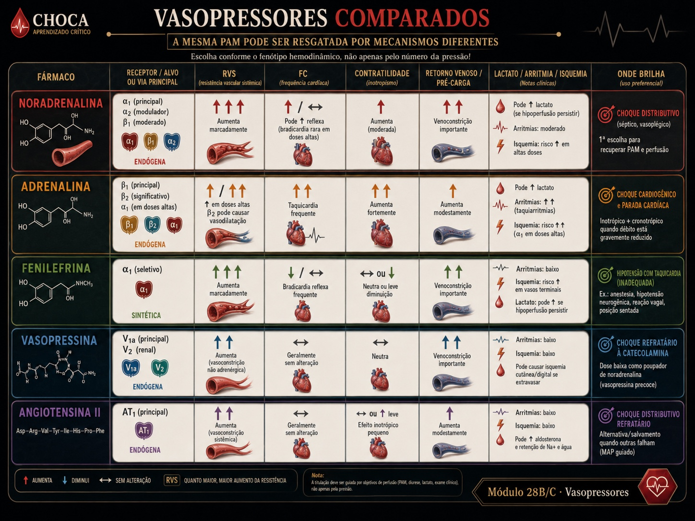
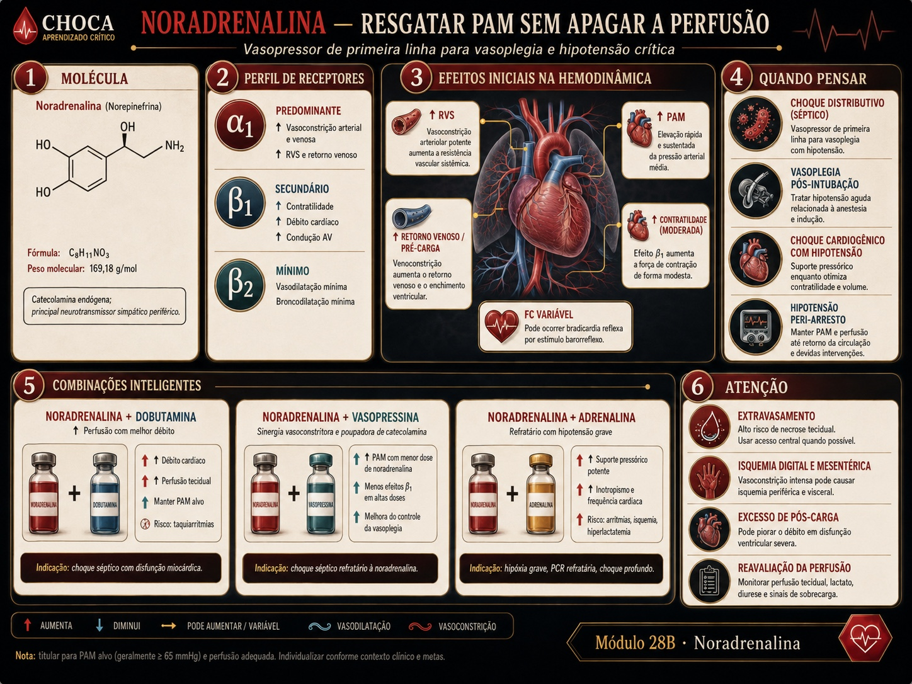

Noradrenalina, adrenalina, dopamina e fenilefrina diferem pelo perfil de receptores — e a
matriz de efeitos (RVS, débito, FC, custo metabólico, pós-carga, arritmia) sai do mesmo motor que você já
conhece. Leia pela coluna, não pelo nome. α1β1β2

Fig. 28B · Vasopressores comparados por mecanismo. A mesma PAM pode ser recuperada por mecanismos diferentes; compare o efeito pressórico com o custo em frequência, pós-carga e perfusão regional.

Fig. 28B.1 · Noradrenalina como viga pressórica. O ganho de pressão só tem valor quando restaura perfusão. Reavalie débito, pele, diurese e lactato para reconhecer excesso de pós-carga ou vasoconstrição.
Noradrenalina, a viga-mestra. α1 dominante com pouco β1: sobe a RVS e a PAM com mínima
taquicardia — o vasopressor de primeira linha da maioria dos choques com RVS baixa.
Fenilefrina, α1 puro. Sobe a RVS e a pós-carga; a FC cai por reflexo. Útil quando se quer
pressão sem β, perigosa sobre a bomba fraca (sobe a pós-carga sem ajudar o débito).
Adrenalina e dopamina, o custo do β. Adrenalina move os quatro termos (potência ampla, mais
arritmia e lactato). Dopamina some β1/α1 com mais arritmia que a noradrenalina.
Vá à Matriz: leia cada agente pelos termos que move.
Matriz computada (cada célula sai do motor receptor→termo)
agente
RVS
débito
FC
metabólico
pós-carga
arritmia
Leitura por coluna
A coluna RVS mostra que os quatro são vasopressores. A coluna débito separa quem
também ajuda a bomba (β1: adrenalina, dopamina) de quem não (fenilefrina). A coluna FC isola a fenilefrina
(reflexo bradicardizante). As colunas metabólico e arritmia são o custo do β — o preço da potência.
Material educacional · não é suporte à decisão. A matriz computa o mecanismo
(sinais dos termos). Nunca exibe dose, titulação ou conduta para um paciente real.
→ Os sinais são exatos dentro do modelo; a magnitude é didática. → A dopamina é
apresentada num perfil de dose intermediária (ela muda com a dose: DA→β1→α1). → Diluições, faixas de dose e conversão
dose↔mL/h são referência educacional no hub (M28) sob o SAFETY.md §11; o peso é hipotético. → A escolha depende do
termo quebrado e do custo — mecanismo, sem prescrição individualizada. → Confira o protocolo da sua instituição.